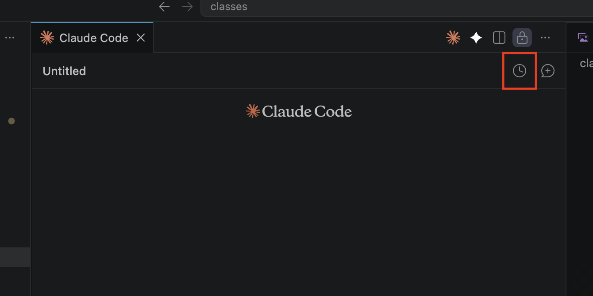

Two setup steps, done ahead of time. So class time is building, not waiting on DNS.
In class we build a second version of your website that only AI bots see — ChatGPT, Perplexity, Claude — plus a front door that decides who gets which version. That front door runs at Cloudflare, so Cloudflare has to be answering for your domain before we can build anything on it.
The move itself is about 10 minutes of clicking — but it can take up to a day to settle in. Get your domain showing Active on Cloudflare at least 7 days before class, so there's time to fix anything odd.
Your website itself doesn't move — it stays exactly where it is (Vercel, Squarespace, wherever). Only the "who answers for this address" part changes.
Types your address, same as always
Stands in front, then passes them along
Exactly where it already lives
A free service that answers for your address. A huge share of the internet already runs through it — boring, trusted plumbing.
Nothing. Same address, same site, same look. But once Cloudflare is standing in front, we can teach it the trick this class is about: show humans your normal site, and show AI bots a version built just for them.
From out front, Cloudflare also shields and speeds up your site — blocking attacks and bad bots, absorbing traffic floods (DDoS), and caching your pages worldwide. Real security upgrades, at $0, whether or not we do the AI-bot trick.
Cost: $0. The Free plan is genuinely free — no trial, no credit card.
You have yourbusiness.com and it points at your live site. You'll add it to Cloudflare, then flip one setting at the company you bought it from. That's the next two slides — ~10 minutes of clicking, then a wait.
You need a real domain for this class — the AI-bot trick can't be done on a .vercel.app address. Good news: you'll buy one inside Cloudflare, which skips the flipping-and-waiting entirely. Create the account on the next slide, then jump to the "No domain yet" slide.
Getting a real domain was the homework at the end of Class 1 — if you skipped it, path B is your catch-up, and it's actually the faster path.
Use an email you'll keep long-term — this account ends up being the front door for your business's website.
Nameservers are the internet's phone-book entry for your domain — they say who answers when someone types your address. Right now the entry names the company you bought it from. You're changing it to say "Cloudflare answers now."
yourbusiness.com) and pick the Free plan.ada.ns.cloudflare.com). Keep that page open.Your registrar is Vercel, so step 4 happens there: go to vercel.com/dashboard/domains → click your domain → under Nameservers, click Edit → paste in Cloudflare's two nameservers and save. That's the whole change.
Now you wait — minutes to a day. Cloudflare emails you when your domain is Active. Nothing is broken while you wait; your site keeps running the whole time.
Then connect it to your website. Open your website project in Claude Code and paste:
Path B students are usually completely done with Step 1 in about 15 minutes — no waiting.
Two quick checks. Do both — the first proves Cloudflare has your domain, the second proves your site survived the move.
Open dash.cloudflare.com — your domain should show Active (you'll also get an email). If it still says Pending, it's just not done settling — check back later.
Visit your site in a regular browser tab. It should load exactly like before — same pages, same 🔒 padlock in the address bar. Click around a few pages to be sure.
Site suddenly broken or stuck in a redirect loop right after the switch? That's a known two-minute fix — jump to the last slide.
In class, you won't type a single Cloudflare command — Claude will. For that to go smoothly, Claude needs two things set up ahead of time: Cloudflare's official skills (its up-to-date instruction set, written by Cloudflare), and a terminal that's logged in to your account.
Almost nothing. Paste one message into Claude Code, restart the app once when Claude asks, and click Allow once in your browser. Claude does all the technical setup itself.
Claude can build and deploy on your Cloudflare account — the same access you'd have, approved by you in the browser. Nothing happens to your live site until class.
Why the skills matter: Cloudflare changes fast. The official skills tell Claude the current, correct way to use its tools — so it works from Cloudflare's own instructions instead of guessing from memory.
This happens in your website project from Class 1 — the folder your site lives in. That's where we'll build in class. Open it in VS Code, open Claude Code, and paste:
Expect Claude to pause twice — one restart of Claude Code partway through (with the 🕐 pick-up-where-you-left-off move you know from Class 2), and one Allow click in your browser. Both are on the next slide.
New tools only switch on after a restart. When Claude asks, fully quit and reopen — then click the 🕐 clock icon at the top-right of the Claude box (boxed in red below), pick the chat you were just in, and say "continue the Cloudflare setup."

A Cloudflare page opens in your browser. Sign in and click Allow — that logs your terminal in to your account so Claude can deploy for you in class. One click, one time.
Done when Claude confirms it's logged in — it runs a check that prints your account name — and confirms your domain shows as active. From that moment, you're class-ready.
What we build in class: a second, bot-only version of your site — and the front door that quietly serves it. By the end, ChatGPT and your customers will be seeing two different websites at the same address.
Bring your laptop to class with your website project open. We'll build from here together.
Same habit as always: when something doesn't work, you don't go hunting for the fix — you describe what happened to Claude, and it diagnoses and fixes it. Paste the error, or just say what you see:
If your site starts looping or shows a security error right after moving to Cloudflare, it's almost always one setting. Paste this into Claude Code:
Still stuck after asking Claude a couple of times? Don't lose your evening over it — email me at eric@stratengineai.com and I'll walk you through it.